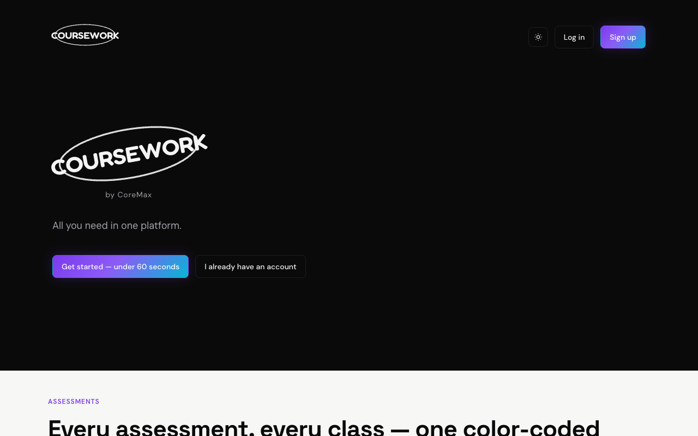
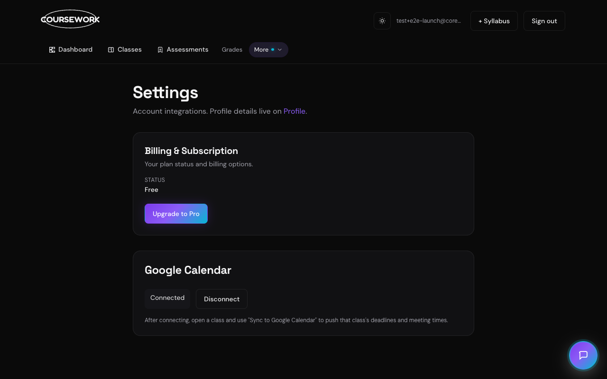
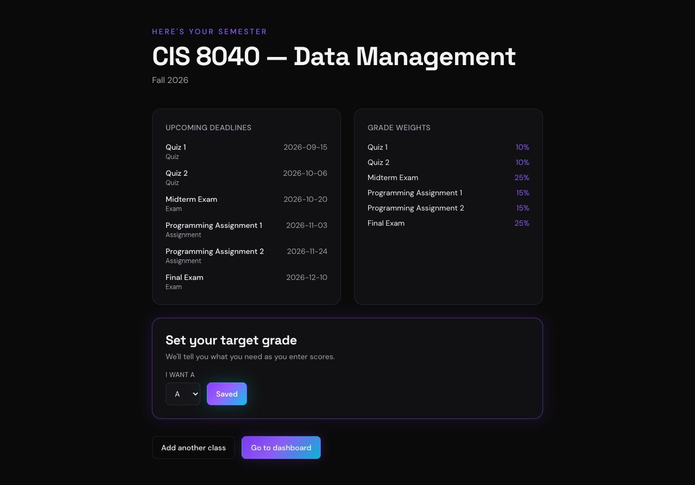
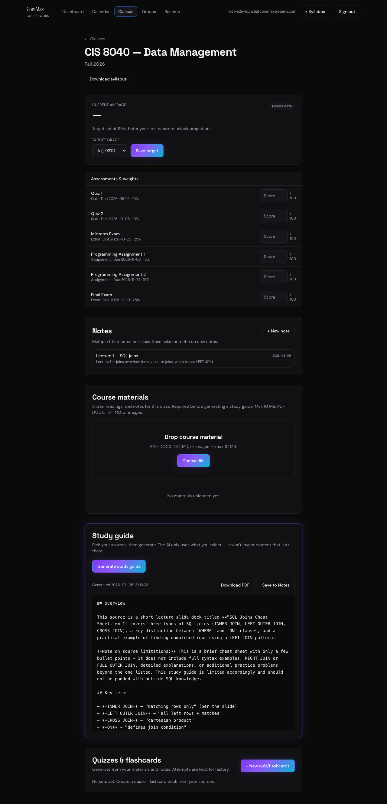
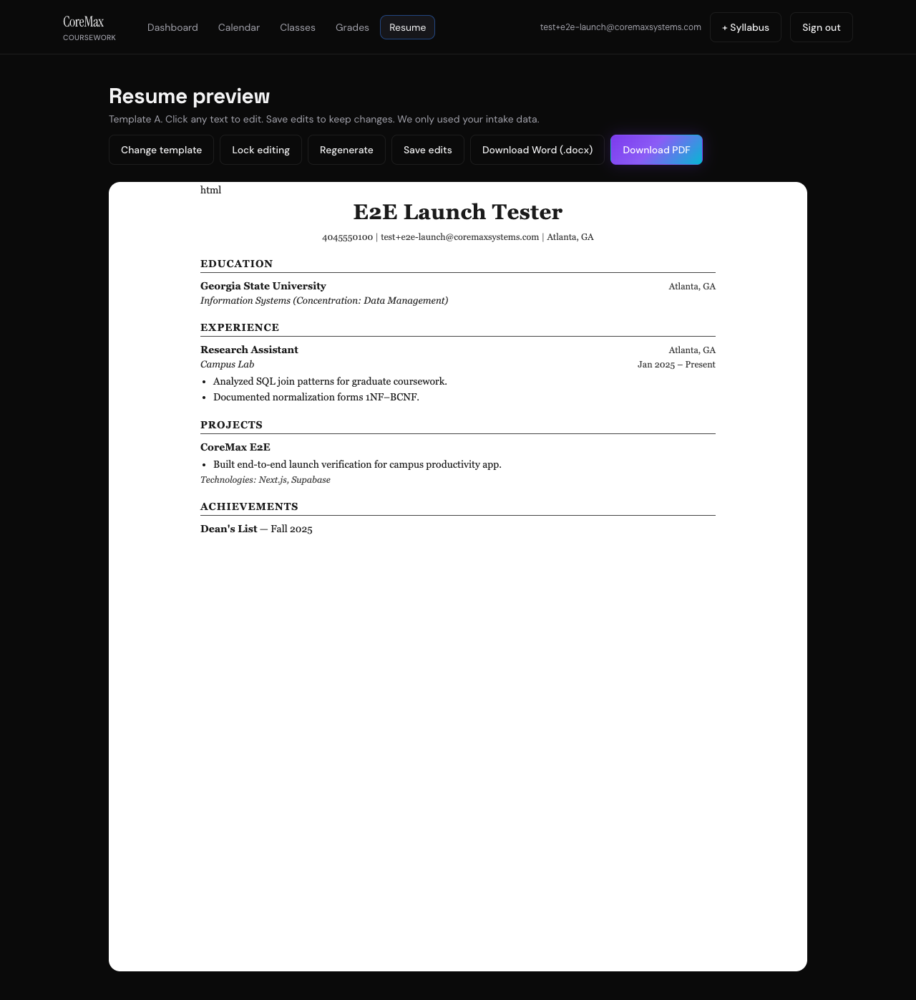

CoreMax LLC · Product
Coursework by CoreMax
A full-stack student productivity platform — upload your syllabus, get your whole semester automatically organized. I designed and built it solo: the app extracts assignments, exams, and grade weights, builds a real-time calendar, tracks grade projections against a personal goal grade, generates AI study guides and quizzes strictly grounded in the student's own uploaded materials, and adds an in-app AI assistant plus ClassToExcel semester exports.
- AI syllabus parser with anti-fabrication guardrails on every AI feature
- Google Calendar OAuth 2.0 with encrypted token storage — syncs due dates to a student's personal calendar
- Real-time grade tracking with "what score do I need" calculations against a user-set goal grade
- HTML-first resume builder (preview, PDF, DOCX) after a JSON-based approach proved brittle in production
- Row-Level Security on every Supabase table, scoping all data to the authenticated user
- Solo-founder compliance: Twilio A2P 10DLC, Google OAuth app verification, privacy/terms — Stripe freemium live with customer portal
- ClassToExcel — export a class or whole semester to a color-coded Excel spreadsheet
- In-app AI assistant — ask about classes, deadlines, and grades from a chat bubble grounded in the user's own coursework
- Live: coremaxsystems.com
Stack: Next.js 14 (App Router), Supabase, Claude API, Stripe, Google Calendar OAuth, ExcelJS, Twilio SMS, Vercel




